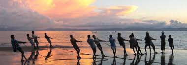
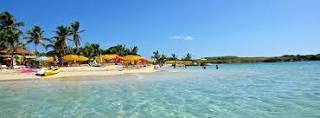
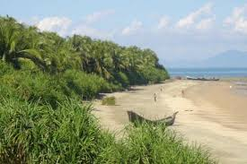
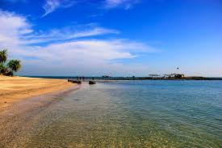

Welcome to Coxs Bazar
Cox's Bazar (Bengali: কক্সবাজার, Koksbajar, Koksbazar or Kokshbajar) is a town, a fishing port and district headquarters in Bangladesh. The beach in Cox's Bazar is an unbroken 120 km (75 mi) sandy sea beach with a gentle slope, one of the world's longest.[2][3][4] It is located 150 km (93 mi) south of the industrial port Chittagong. Cox's Bazar is also known by the name Panowa, whose literal translation means "yellow flower." Its other old name was "Palongkee".
Other places in Cox's Bazar
-  Inani Beach (also Enani Beach) is an 18-kilometre-long (11 mi) sea beach in Ukhia Upazila of Cox's Bazar District, Bangladesh.[1] It has a lot of coral stone. This coral stones look green and live in summer or in rainy season..
-  The modern Cox's Bazar derives its name from Captain Hiram Cox (died 1799), an officer of the British East India Company. Cox was appointed Superintendent of Palongkee outpost after Warren Hastings became Governor of Benga.
-  Today, Cox's Bazar is one of the most-visited tourist destinations in Bangladesh, though it is not a major international tourist destination. In 2013, the Bangladesh Government formed the Tourist Police unit to better protect local and foreign tourists, as well as to look after the nature and wildlife in the tourist spots of Cox's Bazar
Saint Martin
Saint Martin (French: Saint-Martin; Dutch: Sint Maarten) is an island in the northeast Caribbean, approximately 300 km (190 mi) east of Puerto Rico. The 87-square-kilometre (34 sq mi) island is divided roughly 60/40 between the French Republic (53 km2, 20 sq mi)[1] and the Kingdom of the Netherlands (34 km2, 13 sq mi);[2] but the two parts are roughly equal in population, with slightly more people living on the Dutch side. It is the smallest inhabited island divided between two nations. The division dates to 1648. The southern Dutch part comprises Sint Maarten and is one of four constituent countries that form the Kingdom of the Netherlands. The northern French part comprises the Collectivité de Saint-Martin (Collectivity of St Martin) and is an overseas collectivity of France.